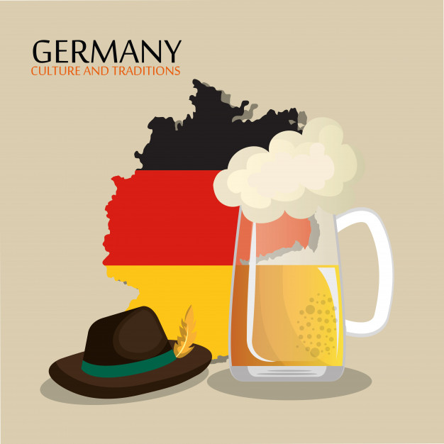

Ciekawostki
- Ren, najdłuższa rzeka w Niemczech, ma 865 km.
- Pierwsza drukowana książka została wydana właśnie w Niemczech.
- Niemcy uwielbiają białą kiełbasę z dodatkiem słodkiej musztardy (Weisswurst).
- Karnawał w Niemczech jest obchodzony od 11. dnia 11. miesiąca roku od godziny 11.11.
- W Niemczech produkuje się ponad 1500 rodzajów kiełbasy i 300 rodzajów chleba.
- Polacy stanowią po Turkach największą grupę imigrantów w Niemczech.
- Najstarszym browarem w Niemczech jest Weihenstephan, został założony w roku 1040 przez mnichów benedyktyńskich.
- Najpopularniejszym sportem Niemców jest piłka nożna. W kraju tym istnieje 26 tysięcy klubów piłkarskich a ponad milion Niemców zarejestrowanych jest w fanklubach.
- Najwyższa katedra świata znajduje się w Ulm. Budowę Ulmer Münster ukończono w 1890 roku. Wieża kościoła ma wysokość 161,53 metrów.
- Popularne żelki owocowe HARIBO stworzył w 1920 roku, niemiecki cukiernik Hans Riegel. Nazwa firmy powstała od dwóch pierwszych liter: imienia, nazwiska i rodzinnego miasta: Hans Riegel Bonn.
